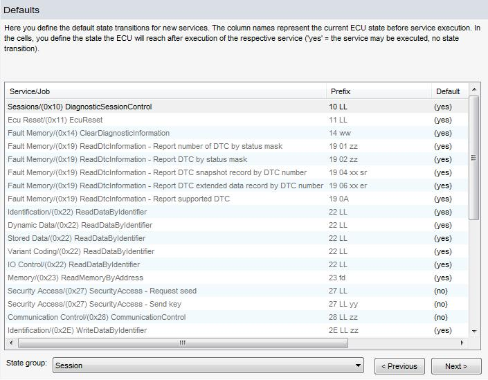

State Transition Defaults at Diagnostic Classes
The table defines standard values for each service used in a diagnostic class (Used Protocol Service). These values will be assigned to new services created in the future.
See the description of the similar table for editing state transitions.